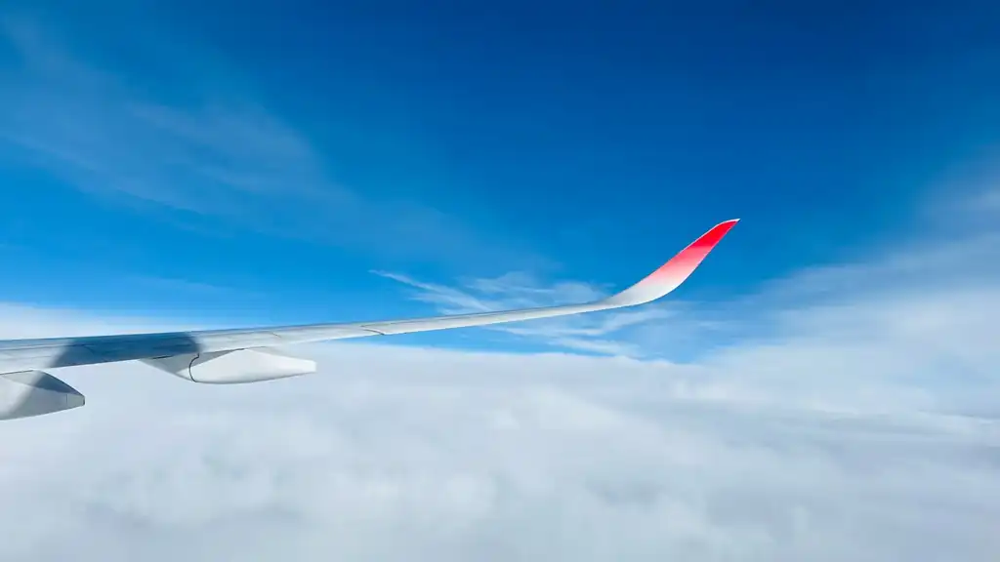

Love flying.
Keep flying.
For those who simply love to fly.
Made somewhere between the ground and FL400.
LoveFly.club
记录每一次起飞，
也计算每一次可能。
常客工具 × 飞行数据库
日志、航线、里程、会籍，以及为下一次起飞准备的小工具。
Gate 01Calculator
Gate 02Routes
Gate 03Flight Log
Gate 04Miles
Gate 05Airports
Gate 06Stories